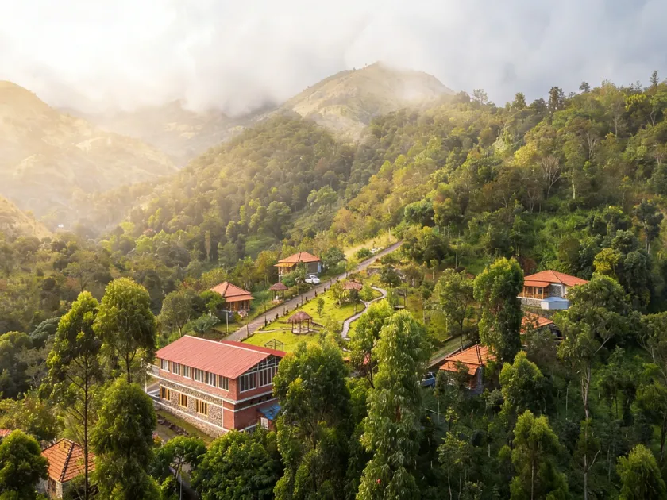
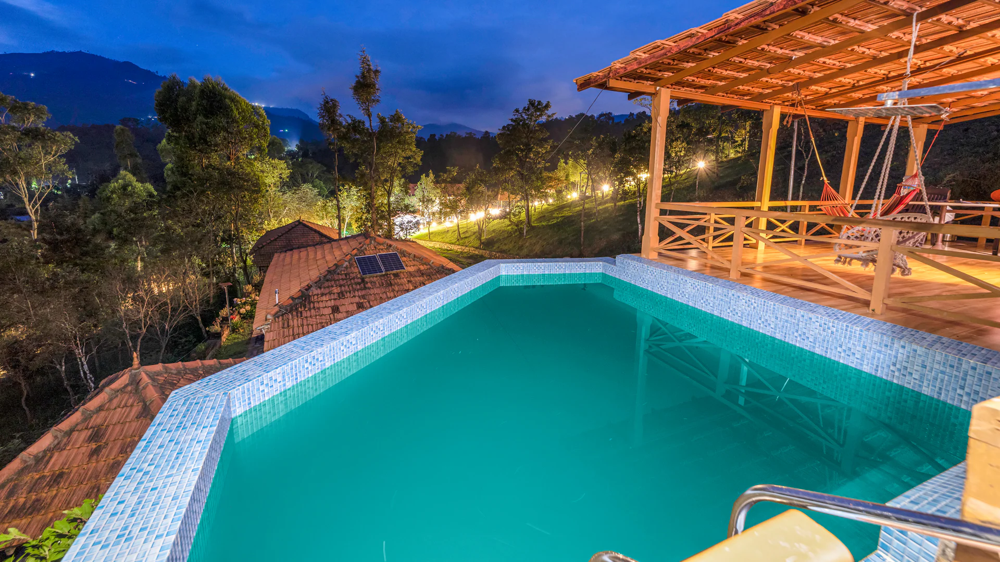

01
Luxury · Top Pick
Zacs Valley Resort — Kodaikanal's Best Luxury Valley-View Stay
"Where mist and mountain converge in utter seclusion."



📍 7 km from town, Perumal Malai Rd
🛖 6 accommodation types
🏊 Rooftop pool available
🌿 Ayurveda wellness centre
✅ Free Wi-Fi & parking
Best For
Couples on honeymoon, wellness retreats, and travellers who want the full luxury hill-station experience — private pools, Jacuzzis, Ayurvedic treatments, and valley vistas from every room type. Also well-suited for families who want high-end amenities and a kids' club. Zacs Valley is consistently rated among the best resorts to stay in Kodaikanal for those who want to splurge.
Why We Recommend It
Zacs Valley Resort stands out for its panoramic valley views, spacious cottages, rooftop pool, and wellness facilities. Travellers looking for a premium stay away from the crowded town centre will find it especially appealing.
Pros
- ✓ TripAdvisor Travellers' Choice 2025 — top 10% globally
- ✓ Six distinct room types from stream-view cottages to 2BR villas with private pool + Jacuzzi
- ✓ Award-winning Ayurveda and wellness retreat on-site
- ✓ Rooftop pool, outdoor firepit, kids' club, and games room
- ✓ Consistently praised for warm, attentive staff and spotless rooms
- ✓ Multi-cuisine restaurant with outdoor al fresco dining
- ✓ Eco-friendly earth-material cottage construction
Cons
- ✗ ~6 km of rough, unpaved approach road — sedans struggle; SUV/crossover recommended
- ✗ Takes 50+ minutes from Kodaikanal town to reach the property
- ✗ Food quality is praised but some guests find it pricey relative to quantity
- ✗ Valley-view villa rooms with private pools are premium-priced
- ✗ Remote location means you're dependent on the resort for most meals